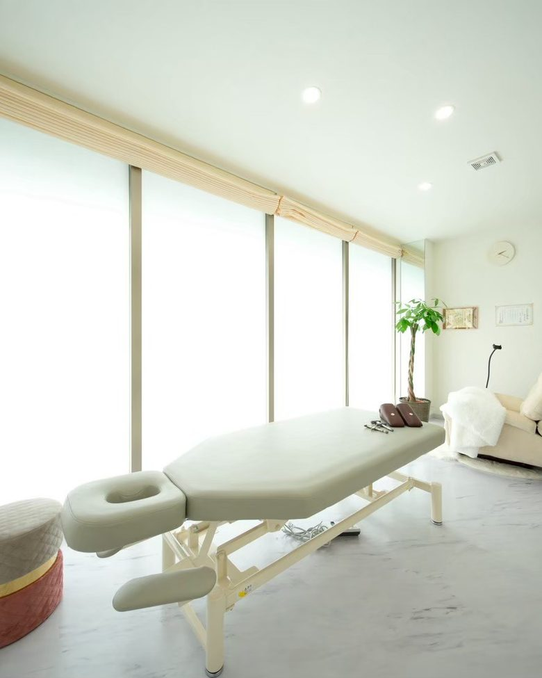
女性専用・完全個室。ひとりだけの時間です。実際に、こんなご相談が多いです。
病院に行くほどではない、けれど気になる。その手前で立ち寄れる場所であろうとしています。施術者ひとりで営む、完全予約制のサロンです。
同じ時間に別のお客さまをお通ししません。受付でも施術中でも、誰かに聞かれる心配はありません。
着替えは不要です。デリケートゾーンに直接触れる施術は行いません。
カウンセリングのみのご来店を無料で承っています。施術を受けるかは、話を聞いてから決められます。
公的な調査で分かっている数字です。当サロンの施術効果を示すものではありません。
年齢を重ねるほど割合は上がりますが、「みんなが黙っている」ため、自分だけだと感じやすい数字です。
家族にも、友人にも、病院にも。相談先がないのではなく、切り出せないのがこの分野です。
「産後の人がなるもの」という思い込みが、いちばん相談を遅らせます。年齢も出産経験も、条件ではありません。
原因まで分かっている人は6割を超えるのに、続けられている人は1割ほど。この差がすべてです。
フェムーンがやっているのは、この「続かない」を一緒に埋めることです。
出典：花王 FemCare LAB「尿もれ実態アンケート」（2021年／n=1,648）、P&G「日本女性40,000人 UI実態大規模調査」（2019年）。いずれも一般的な調査結果であり、当サロンの施術効果を示すものではありません。
医学的な診断ではありません。ご自身の状態を言葉にするための、8つの質問です。
チェックだけで終えていただいて構いません。
骨盤だけを見ても、女性特有のお悩みは説明がつきません。
フェムーンでは、外側から内側へ順にアプローチしていきます。
骨盤の傾き・ねじれ、背骨、脚のつき方まで、全身を見ます。骨盤だけを動かしても、支えている土台が傾いていれば元に戻ってしまうためです。
骨盤が傾くと、その内側におさまっている臓器の位置も変わります。お腹まわりに、やさしい圧でアプローチしていきます。
骨盤の底でハンモックのように内臓を支えている筋肉の、そのまわりをやさしくほぐします。自分では意識しにくい場所なので、ここが「ひとりで続けにくい」理由でもあります。
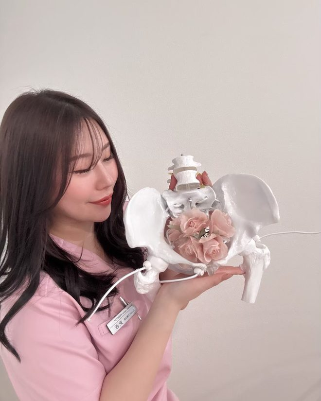
言葉だけで説明されても、自分の体の中で何が起きているのかは分かりにくいものです。フェムーンでは骨盤の模型を使って、どこがどうなっていて、施術で何をするのかを、その場で目で見て確認していただきます。
産後・更年期前後の方／デスクワークが長い方／立ち仕事の方／冷えやむくみが気になる方
妊娠中の方／発熱など体調が優れない方／医師から安静の指示が出ている方
婦人科系の疾患で治療中の方・手術後の方は、事前に主治医にご相談のうえご来店ください。判断に迷われる場合は、ご予約前にお気軽にお問い合わせください。
いちばん不安なのは「何をされるのか分からない」こと。先にお伝えします。
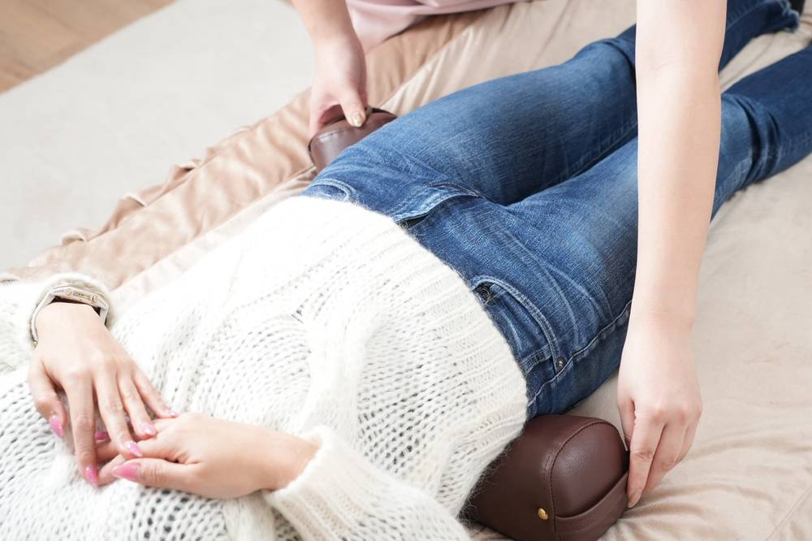
施術はお洋服を着たまま。強い痛みを伴う施術は行いません。
フェムーンのフェムケア矯正®は、骨盤をはじめとした骨格と、その内側にある内臓の位置、骨盤底筋群のまわりに、衣服の上から手技でアプローチする施術です。
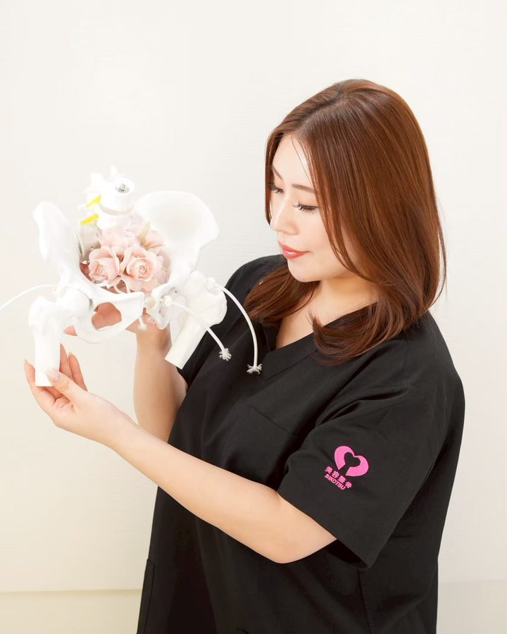
施術は約30分。初回はカウンセリング込みで45〜60分ほどみておいてください。
お困りごとと、どんなときに気になるかをうかがいます。カウンセリングのみのご来店も無料です。
お洋服を着たままお受けいただけます。動きやすい服装でお越しください。
骨盤・骨格を整え、骨盤底筋群のまわりにアプローチします。強い痛みはありません。
お身体の状態と、ご自宅で続けていただきたいことをお伝えします。
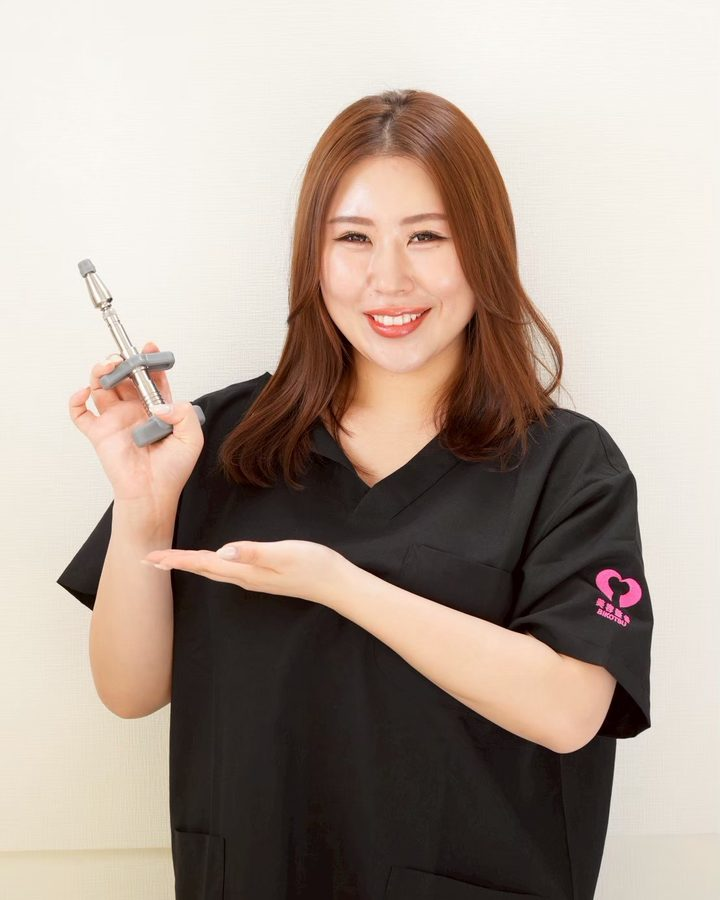
認定資格保有フェムケアを通して、すべての女性が輝く人生をサポートしたい。その一心でこのサロンを始めました。
尿もれも、生理の重さも、デリケートゾーンのお悩みも、本当は多くの方が抱えています。でも誰にも言えないまま、「もう年齢だから」で終わらせてしまう。その手前で立ち寄れる場所が、福井にもあっていいと思っています。
初回は、施術よりもお話をうかがう時間を長めにとっています。何も決めずに、話だけしに来てください。
フェムケア矯正®（FemcareAdjust®）Certified Instructor 認定講座 修了一般社団法人日本美容整骨協会 認定技術／2026年7月
カウンセリングの時間を長めにとります。着替え不要・約45〜60分。
表示はすべて税込です。男性向けメニュー（メンテック矯正）、脱毛、ヘッドスパ、育毛メニューも承っています。
ご本人の許可をいただいて掲載しています。
感じ方・変化には個人差があり、同じ結果をお約束するものではありません。
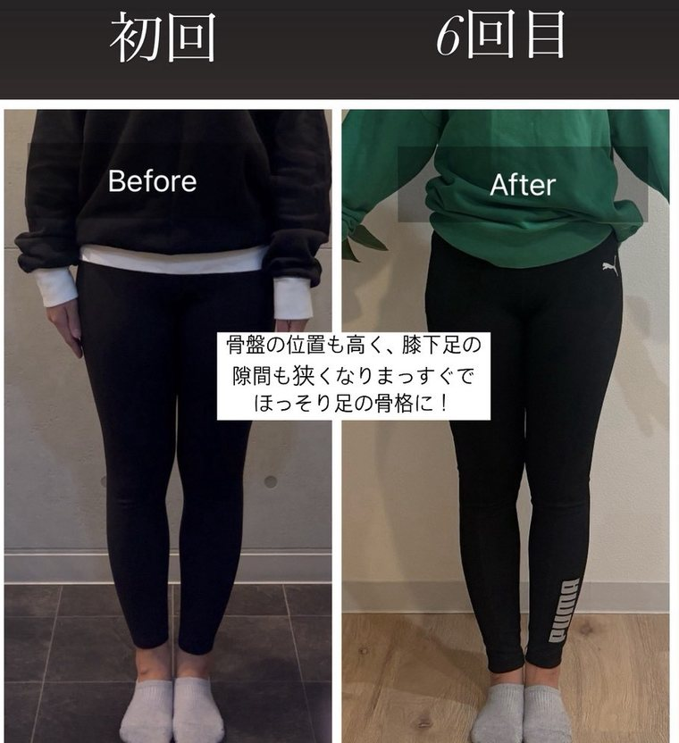
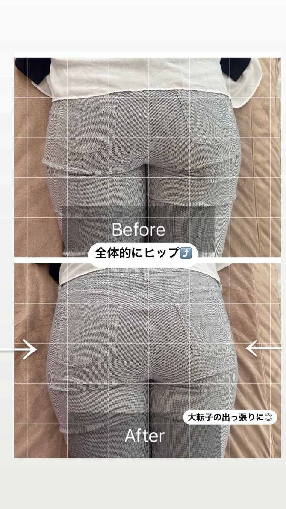
掲載についての考え方
写真は加工・修正をしていません。良く見えるものだけを選んで並べることもしていません。変化の出方には個人差があり、通う回数や間隔、ご自宅でのケアの有無によっても変わります。当サロンは医療機関ではなく、施術は疾病の治療・診断を目的とするものではありません。
5回目の施術で、生理のときの腰の重たさが気にならなくなりました。頑固だった太ももの張りも、少しずつすっきりしてきたように思います。
S さま／20代後半
丁寧にカウンセリングしてくださり、アドバイスもたくさんいただきました。施術は痛くなく、終わったあとは体が軽くなりました。
よねむら さま／20代後半・会社員
お店の雰囲気も接客もすごく良くて、おしゃべりも楽しかったです。自分の身体の状態を、わかりやすく説明してもらえました。
サコ さま／40代・会社員
ホットペッパービューティー掲載のクチコミより、ご本人の表現を尊重して掲載しています。感じ方には個人差があります。
その迷いのまま来てくださって大丈夫です。カウンセリングのみのご来店も無料ですので、施術を受けるかどうかはお話を聞いてから決めていただけます。
いいえ、直接触れる施術は行いません。骨盤をはじめとした骨格と、その内側の内臓の位置、骨盤底筋群のまわりに、衣服の上から手技でアプローチします。〔要確認〕サロン確認
動きやすい服装でお越しください。お洋服を着たまま受けていただけますので、お仕事帰りやお買い物のついでにも立ち寄っていただけます。
生理中でもお受けいただけます。ただし量が多い日や痛みが強い日は無理をせず、別日にご予約ください。ご予約時にお伝えいただければ体調に合わせて調整します。〔要確認〕方針
妊娠中の方の施術はお受けしておりません。産後の方は、医師の許可が出ていてうつ伏せがつらくないことを目安に、産後◯ヶ月〔要確認〕以降からご案内しています。
お子さま同伴で来ていただけます。完全個室の1名貸切ですので、まわりの目を気にせずお過ごしいただけます。ご予約の際にお知らせください。
お身体の状態によります。初回のカウンセリングで、無理のない通い方をご提案します。回数券のご購入をその場でお願いすることはありません。
現金と各種クレジットカード（Visa／Mastercard／JCB／American Express／Diners Club／UnionPay／Discover）がご利用いただけます。
はじめての場所は、それだけで緊張します。
ドアを開ける前に、中の様子を知っておいていただけたらと思います。
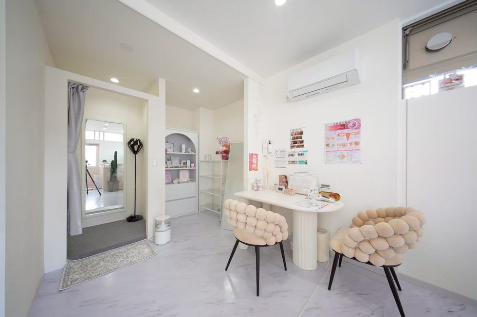
院内は白とベージュだけ。アーチの奥がカウンセリングスペース、手前が施術スペースです。1名貸切なので、ほかのお客さまと顔を合わせることはありません。
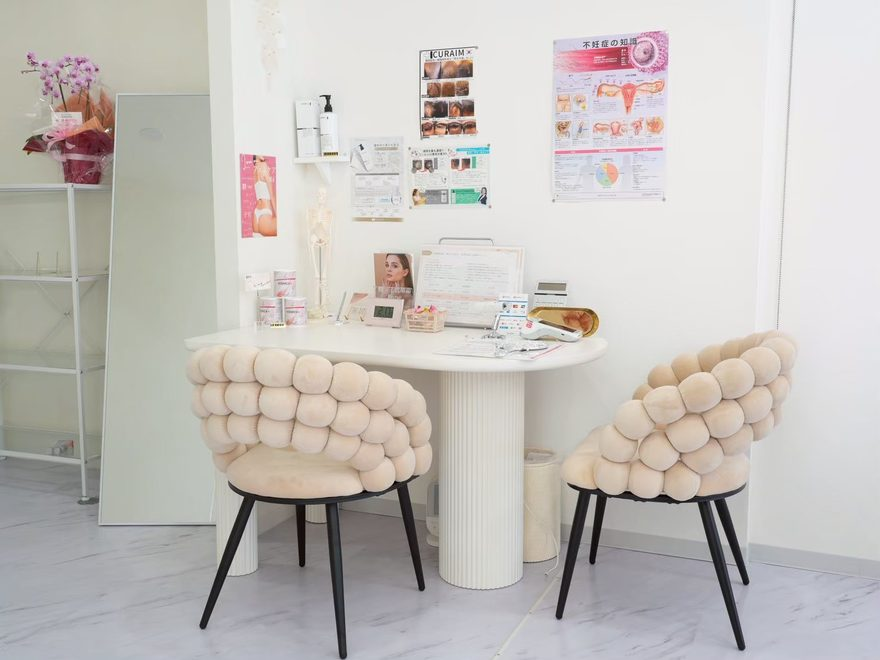
まずはこの席で、お話をうかがいます
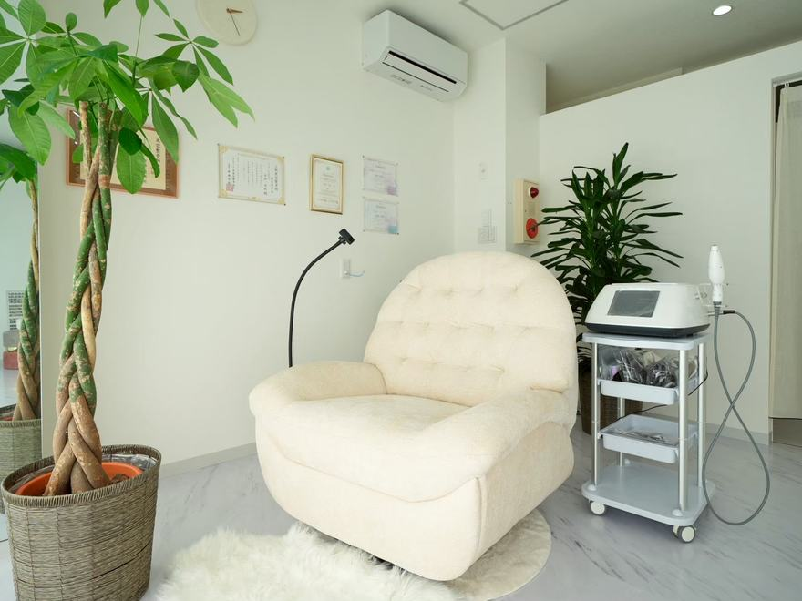
お待ちいただくスペース。ドリンクをご用意しています
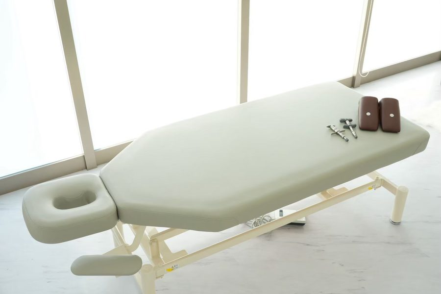
施術ベッド。お洋服を着たまま横になっていただきます
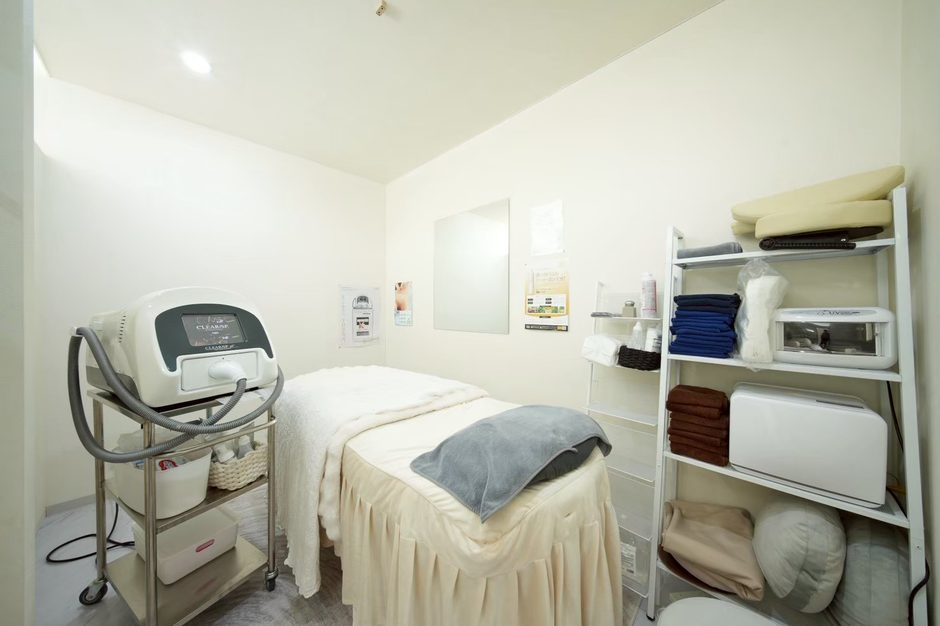
脱毛・育毛メニュー用のスペースも同じ院内にあります
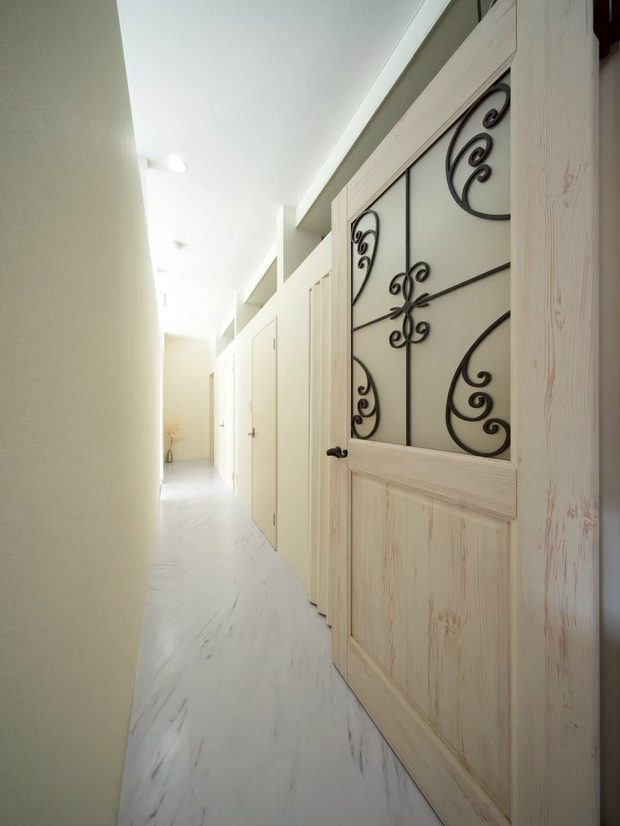
フェムーンは、施術者ひとりで営んでいるサロンです。同じ時間に別のお客さまをお通しすることはありません。受付でも、待合でも、施術中でも、誰かに聞かれる心配なくお話しいただけます。
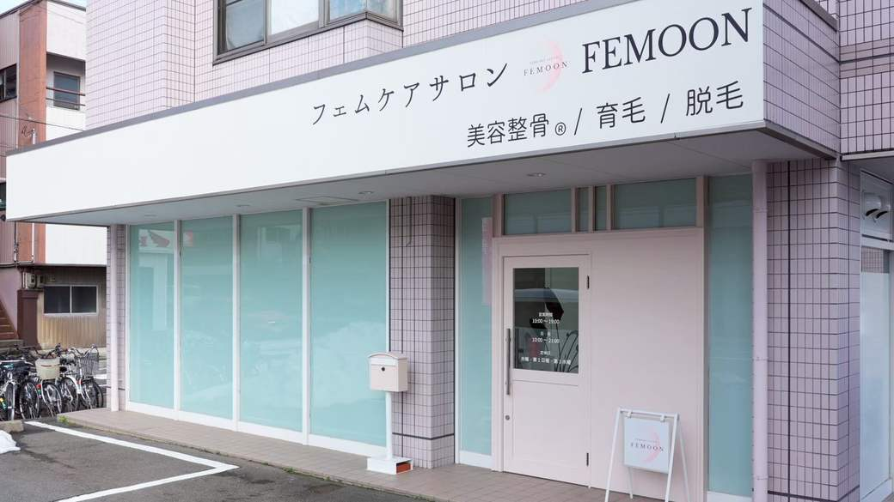
白い看板と、専用駐車場3台福井県福井市大宮3-13-9
パールコーポ 1F
芦原街道沿い。ヨーロッパ軒 大宮分店から徒歩15秒。
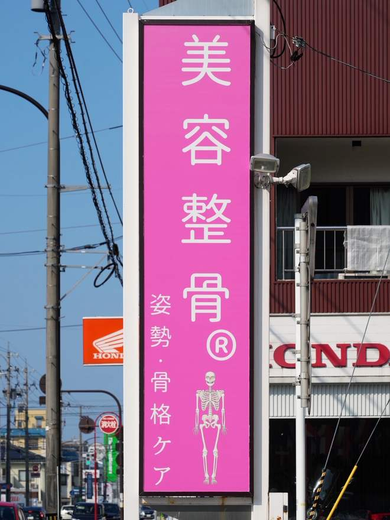
通り沿いのこのピンクの看板が目印です。
月火水金土 10:00–19:00
日・祝 10:00–21:00
定休：木曜・第1日曜・第3水曜
専用駐車場 3台
完全予約制。当日のご予約はLINE・Instagram・お電話で承ります。
LINEでのご相談に、お名前は必要ありません。
予約をおすすめするメッセージも送りません。聞きたいことだけ、送ってください。
LINE公式アカウント 〔要確認〕アカウントID